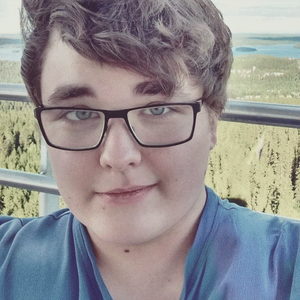

Tomi Mönkkönen

Olen Kuopiossa asuva 21 vuotias opiskelija. Opiskelen ensimmäistä vuotta Savonia-ammattikorkeakoulussa, tavoitteenani valmistua tietotekniikan insinööriksi.
Harrastuksiini on aina kuulunut kaikkea tietotekniikkaan liittyvää joten tämä suuntaus opinnoissani oli aika järkeenkäypä. Audiovisuaalinen taide ja videopelit ovat lähellä sydäntäni ja haaveena olisikin suunnitella ja toteuttaa videopelejä elannon eteen.
Muihin mielenkiinnon kohteisiini kuuluu musiikki, tieteet, teknologia ja yrittäminen.